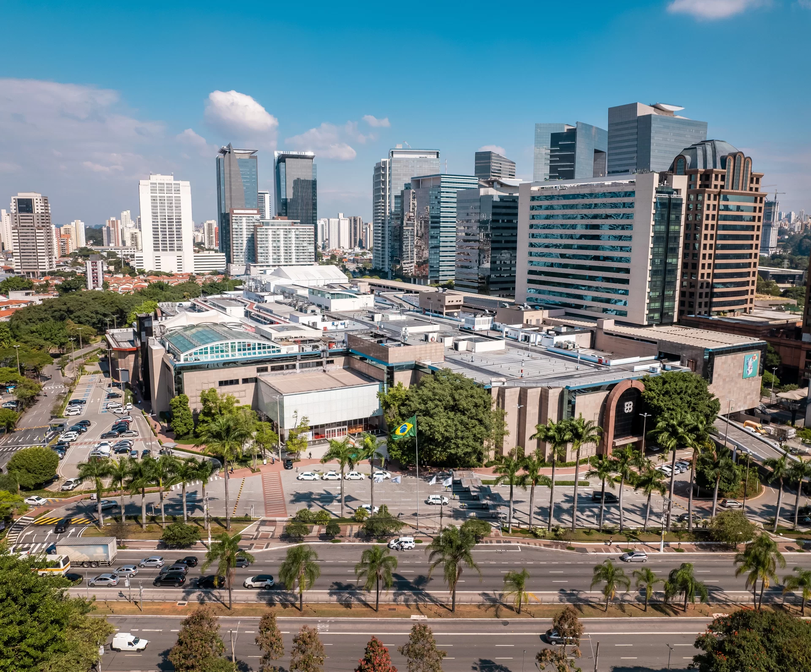

Experience Luxury and Leisure at Morumbi Shopping in São Paulo
Morumbi Shopping is your ultimate destination for a retail and leisure experience. Whether you're looking for high-end fashion or gourmet dining.
About the Shopping
Morumbi Shopping is one of São Paulo's largest and most prestigious shopping malls, offering a wide range of shopping, dining, and entertainment options. Located in the affluent Morumbi neighborhood, the mall attracts both locals and tourists seeking a high-end retail experience.
History and Development
Morumbi Shopping opened its doors in 1982 and has since grown to become a landmark in São Paulo's shopping scene. It was one of the first shopping malls in Brazil to adopt the concept of a comprehensive shopping and leisure complex.
Features and Amenities
The mall houses a diverse array of retail stores, ranging from international luxury brands to popular Brazilian retailers. Visitors can shop for fashion, electronics, home goods, cosmetics, and more.
Notable works in the collection include paintings by artists such as Van Gogh, Renoir, Rembrandt, Botticelli, and Portinari, among others. MASP is particularly renowned for its collection of European art, showcasing works from various periods and styles.
Morumbi Shopping boasts a variety of dining options, including upscale restaurants, casual eateries, and cafes. Whether you're looking for a quick bite or a fine dining experience, the mall offers something to suit every palate.
In addition to shopping and dining, the mall features entertainment facilities such as cinemas, game arcades, and spaces for cultural events and performances. It's a popular destination for families and groups looking to enjoy leisure activities.
Morumbi Shopping provides convenient services such as valet parking, ATMs, currency exchange, and a customer service center to enhance the shopping experience for visitors.
Community and Events
The mall actively engages with the local community by hosting events, exhibitions, and seasonal promotions. It contributes to the cultural and social fabric of São Paulo by supporting local artists and showcasing their work.
During festive seasons like Christmas and Easter, Morumbi Shopping decorates its premises and organizes themed events and activities for visitors of all ages.
Visitor Information
Morumbi Shopping is located at Av. Roque Petroni Júnior, 1089 - Jardim das Acácias, São Paulo - SP, Brazil.
Operating Hours: The mall is open daily, typically from morning until late evening, with extended hours during weekends and holidays.
Special Offers: Visitors can take advantage of special discounts, promotions, and loyalty programs offered by stores within the mall.
Accessibility: The mall is easily accessible by car and public transportation. It offers ample parking facilities and is served by nearby bus stops and metro stations.
With all this information, you're all set to explore Morumbi Shopping. Enjoy your shopping experience!